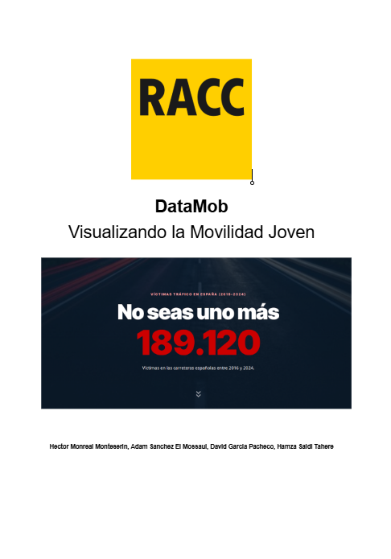
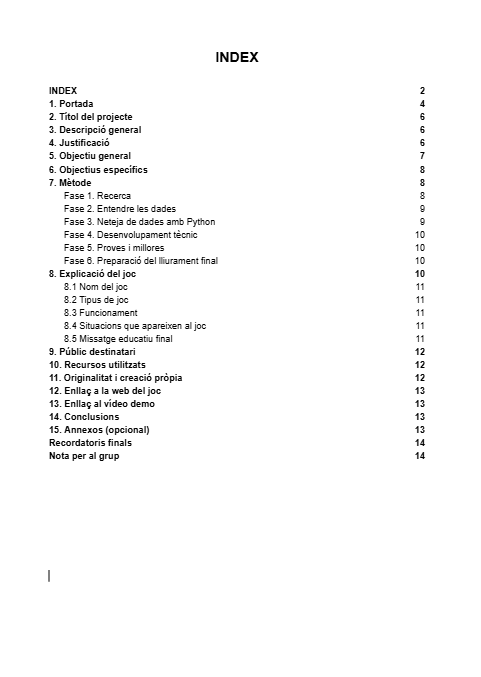
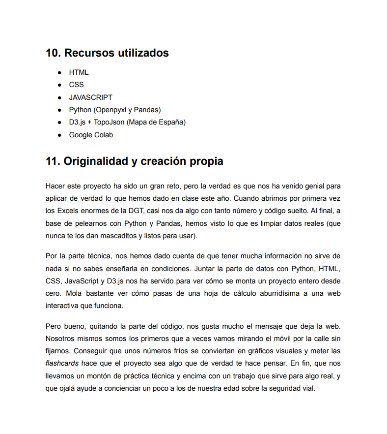
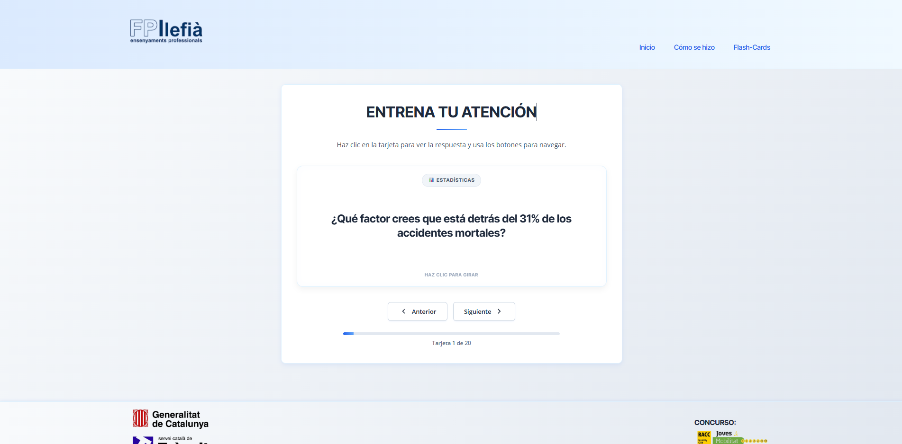

DIARIO DEL PROYECTO

Semana 1 - Nacimiento del proyecto
La primera semana nos repartimos los roles y empezamos a darle vueltas a la cabeza con diferentes ideas para el proyecto. Debatimos un montón entre todos hasta que dimos con algo que nos gustaba, y fuimos a "venderle" la idea a los profes a ver qué les parecía. ¡Por fin teníamos proyecto!


Semana 2 - Diseño Página Principal
Ya con luz verde, esta segunda semana nos pusimos el mono de trabajo para recopilar datos reales de accidentes de tráfico (de 2016 a 2024). Hamza y Héctor rastrearon estadísticas y empezaron a organizarlo todo. Luego hicimos una primera limpieza rápida para ir pensando en cómo dibujar los gráficos.
En paralelo, pillamos papel y pizarra y nos pusimos a dibujar los primeros bocetos para imaginarnos cómo queríamos que fuese la página principal de la web.


Semana 3 - Limpieza de Datos con Python
Esta semana nos tocó pelearnos con el código. Usamos Python (con las librerías pandas y openpyxl en Google Colab) porque limpiar todo esto a mano iba a ser imposible. Montamos un script propio para que nos limpiara de golpe todos los Excel que nos bajamos de la DGT: borramos columnas que no servían, cruzamos las provincias con sus Comunidades Autónomas, y arreglamos los huecos en blanco.
Gracias a ese código pudimos escupir unos Excel bien limpios y además exportarlo todo a formato .json (ej: muertes_global_por_anyo.json, etc). ¡Con eso hecho, ya teníamos la base perfecta para que nuestros gráficos en D3.js se dibujaran maravillosamente!


Semana 4 - Diseño Encabezado y Pie de Página
Durante la cuarta semana nos centramos en dejar bien montado y funcional tanto el encabezado (el menú de arriba) como el "footer" de abajo, aplicándolo a todas las vistas de la web.
Héctor y Hamza también estuvieron comprobando con lupa que los números que habíamos sacado con Python cuadraban bien con los informes de la DGT. Una vez verificados, subieron esos datos pulidos a un Excel compartido para que los tuviéramos a mano, como podéis ver en la captura.


Semana 5 - Bocetos de los gráficos
La quinta semana fue crucial para decidir de una vez por todas qué gráficos íbamos a colocar sí o sí en nuestra página (nuestra idea estrella era la curva de cantidad de muertes a lo largo del tiempo). A la vez, diseñamos cómo se vería este mismo "diario" que estás leyendo ahora mismo para llevar el seguimiento de los avances.


Semana 6 - Precierre
Hoy hemos tenido el "ensayo general" con los profes. Les vendimos la idea del proyecto actuando como si no supieran absolutamente nada de nosotros ni del tema. Nos vino genial para forzarnos a ser súper claros con nuestras explicaciones, ver si sabíamos transmitir el mensaje y pulirlo.
Además, por fin elegimos la selección definitiva de las visualizaciones y gráficos que podéis ver ahora mismo funcionando en el inicio. ¡La cosa ya va cogiendo forma!




Semana Final - Conclusión del proyecto
En esta semana final, hemos completado la documentación del proyecto en formato PDF, recopilando todos los detalles del desarrollo, desde la idea inicial hasta la implementación final.
Además, hemos mejorado significativamente el estilo de las flashcards, transformándolas de un diseño plano y simple a uno con personalidad y atractivo visual, utilizando colores vibrantes y elementos interactivos para una mejor experiencia de usuario.